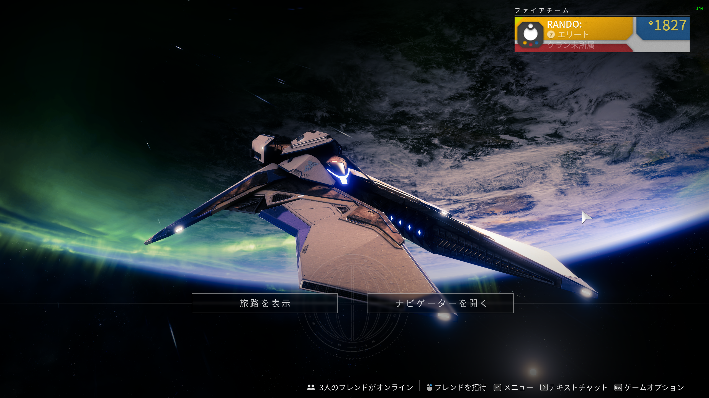
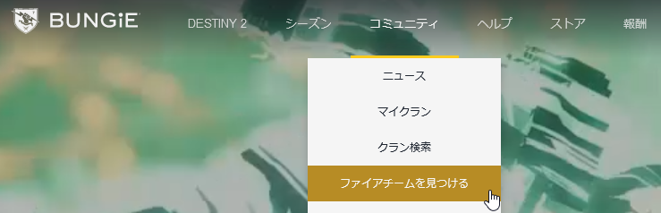
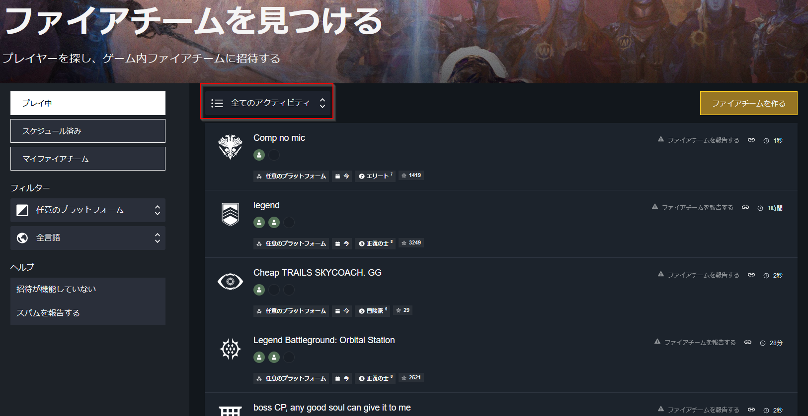
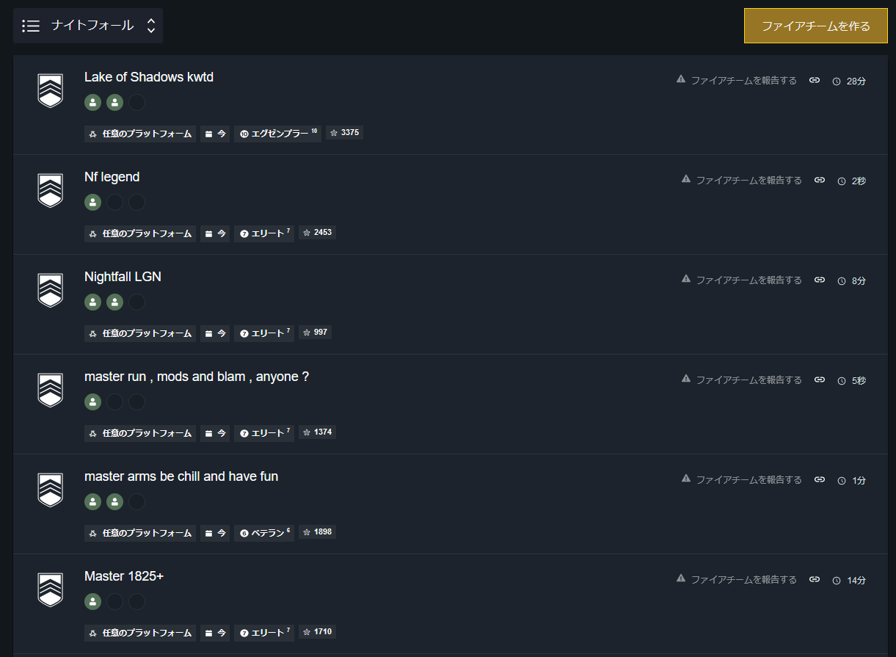
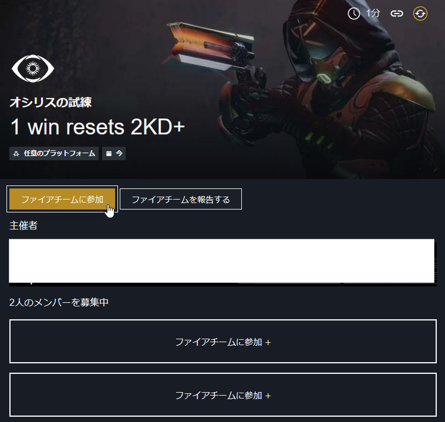
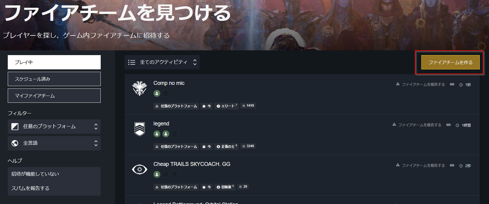
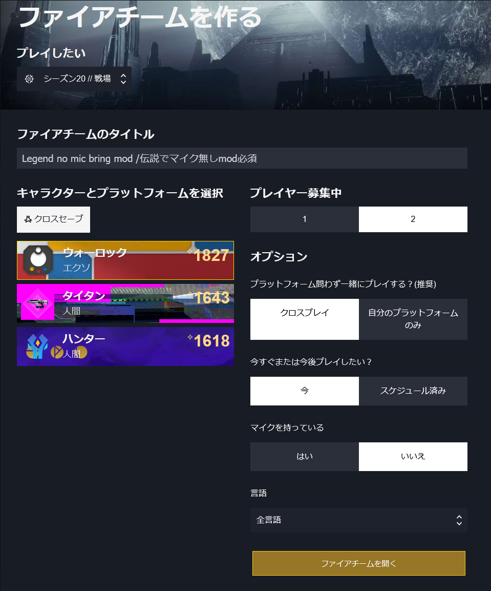

Destiny2コンパニオンアプリを使用したマッチング検索要約メリットデメリット対策PCのBungie公式サイトから参加する手順ここで使われる大まかな訳プレイ前に確認してくる英語など途中離脱したい場合Bungie公式サイトから募集する手順Android / iPhoneで操作について
高難易度のアクティビティにおいては、ゲーム内の自動マッチング機能は利用できません。
公式サイトまたはDestiny2コンパニオンアプリを使うことで、手動でのファイアチーム作成をすることでメンバー募集や参加ができ、高難易度アクティビティへの参加ハードルを下げることができます。
この方法で募集をかければ、すぐにおおよそのアクティビティに参加できる。
クランやDiscordで呼びかけてもタイミングが合わないためにプレイできない、という不幸が最小限にできる
ナイトフォール(玄人)でもクランに参加していない野良プレイヤー同士でプレイできる
基本的にマイク無しでプレイするガーディアンがほとんどなので、言語の問題もほとんどない。
募集タイトルに「マイク必要」と書けば日本人でゲーム内のVCで連携できる
自分で参加や募集しないといけない
英語以外の募集はかなり参加者が少ない
日本語と英語を併記しておく。日本人同士でマッチングしやすくなる
タイトルに[日本語+英語]で併記しておくと、参加者減はある程度減らせるかもしれません
以下はPC版での手順です。
まずは必ずオービットに戻っておく。 オービットとは下の画面のことです。
(オービットへの戻り方 : [Tab]などを押してから「オービットに戻る」を選択する)

オービットに戻ったら[Alt +Tab]でブラウザへ移動
bungie.netへアクセスする
予めログインしておくと便利です
「コミュニティ > ファイアチームを見つける」を選択する

プルダウンメニュー「全てのアクティビティ」をクリックしてプレイしたいものを探す

ナイトフォールだと次のような募集が出てくる。
どんどんマッチングしていくので、募集が間に合わないこともよくある。

各ストライク/迷宮の英語名はDestiny2まとめwikiを参照しておくと良いです。
| 英語 | 和訳 |
|---|---|
| NF | NightFall / ナイトフォール |
| run | 最初から / 周回なので効率よく動ける人 |
| kwtd | 有識者のみOK / 初見はNG / 説明無し |
| Bring MOD | 必ず必要なMod装備をしてください |
| fresh / carry me | 初見 / 初見なので有識者のガイド希望 |
| chill | まったりプレイ。クリア優先でスコアは意識しない |
| Legend | 難易度「伝説」 / マッチングしなくなる最初の高難易度 |
| Master | 難易度「達人」 |
| GM | 難易度「玄人」 / 最高難易度 |
| (パワー値+) | 装備でそのパワー値を超えていることが必須 |
| speedrun | スピードラン希望 / 実績目的なので上級者募集 |
| cp | チェックポイント / 途中から再開したいのでメンバー募集 |
| 100k | スコア10,0000点超え狙い。 / 最高峰狙い |
参加したいタイトルをクリックしたら、「ファイアチームに参加」をクリックする

しばらくすると主催者から招待が来るので、その招待を承認してファイアチームに合流する
合流後、主催者がアクティビティを選択してくれるのであとはプレイするだけ
「r?」 と聞いて来るのは 「ready? (準備できた?)」という意味。準備できてないなら「nr」や「wait」と返す。できたら「r」と回答する。
ほとんどの場合、参加する時点で準備できているのが当たり前なので、聞いてこないのがほとんど。
PvEにおいて全滅が何度も続き、クリアできない場合はテキストチャットを使って、「gg」などねぎらいの言葉を掛けてから離脱する
PvPは基本的に終わるまで離脱しないことを強く推奨
Bungieから非紳士的態度としてマッチング制限が掛けられるおそれあり
「ファイアチームを作る」をクリックする
左側の「任意のプラットフォーム」は、PS4/PS5プレイヤーが、PCプレイヤーを仲間にしたくない時に選択する時などに使用
ただし、PvPで相手側のプラットフォームは指定できない
全言語からは基本的に変更は不要。
どうしても日本人だけ募集したいなら「日本語」を選択。マッチング率は非常に低いので注意

タイトルは「英語 + 日本語」のセットで書いておくと日本人だけでマッチしやすくなるかもしれない。
「No mic」と書いておけば外国人参加者の募集は減らさずに済むかもしれない。
そのほか、募集人数、マイクの有無、言語などを設定して「ファイアチームを開く」をクリック

クリックした瞬間から募集が始まる。英語で募集すると数秒で参加者が来る。
募集人数が揃ったら、ボタン「招待」をクリックする。同時に複数メンバーに招待するので一人ずつ招待しなくて良い。
全員が揃ったら、「閉じる」をクリックする。募集終了という意味
あとは、主催者として募集したアクティビティを選択してプレイを開始する
プレイが終わったら[esc]キーなどでメニューを呼び出して、「ファイアチームから抜ける」と選べば、一連のファイアチームは解散と終了する
基本的に1回の募集で、ファイアチームが解散するのがほとんど。
また募集したい場合はプレイしたいアクティビティに合わせて、募集するのを繰り返す
Bungie公式アプリに、サインインをしたらPC版と同じように「ファイアチーム」のアイコンから選んで、募集/参加ができる
できることはPC版と同じなので、上記手順をもとにがんばってください。
Destiny2 is a registered trademark of Bungie. Trademarks are the property of their respective owners. Game materials copyright Bungie.
May. 06, 2023 / R4NDO: